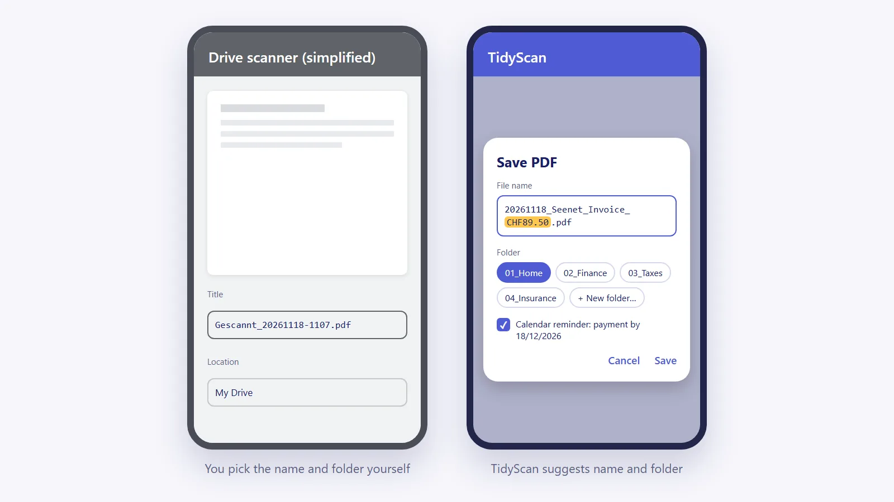

Google Drive scanner or TidyScan: an honest comparison
Updated 18 November 2026 · Silvan, founder of TidyScan · 6 min read
If you have an Android phone, you most likely already have a document scanner: the Google Drive scanner in the Drive app. So why another app? The honest answer: for many people the Google Drive scanner is enough. This page shows what it does well, where it stops and when TidyScan is worth it.
Written by the developer of TidyScan, so not neutral. I have tried to be fair. The information about Google comes from the official Drive Help and my own test (as of 18 November 2026).
What the Google Drive scanner does well
- Free and already there. Tap the camera icon in the Drive app, done.
- Good scans. Automatic or manual capture, crop and rotate, filters and a clean-up tool that removes stains and fingers.
- Several pages in one document.
- Searchable. According to Google, Drive saves scans as searchable PDFs.
- Folder of your choice. When saving you can pick a Drive folder. On Android a widget scans straight into a fixed folder.
- Android and iPhone. The feature is in both Drive apps.
Where the Google Drive scanner stops
The Google Drive scanner is a scanner. Filing is up to you:
- No naming scheme. You decide what goes into the file name with every scan. Google announced title suggestions for the US only in 2023. In our test in Switzerland the scan was simply called
Gescannt_20261118-1107.pdf. - Folder by hand. Drive doesn't decide from the content whether an invoice belongs to «Home» or «Insurance».
- Google Drive only. The scan always ends up in Drive.
- No due dates. A payment deadline on the invoice stays a number on paper.

What TidyScan does differently
For scanning, TidyScan uses Google's document scanner (ML Kit): edge detection, cropping and filters are therefore similar to when you scan with Google Drive. The difference is in everything that follows:
- Name by scheme, automatically:
20261118_Seenet_Invoice.pdf, recognised offline (see file naming convention). - Folder by content: several smart folders with keywords. The app picks, you confirm.
- Swiss QR bill: payee and amount from the QR code, due date as a calendar entry.
- File from email: share PDF attachments and they are filed with the same scheme.
- Storage of your choice: phone, Google Drive or another storage app. TidyScan has no cloud of its own.
- Learns from corrections, such as how you spell a sender.
TidyScan is coming to Google Play soon.
What TidyScan can't do
- No searchable PDF yet. The text of the page is not stored in the file. You find a document through its file name and the PDF information (title, author, keywords) that TidyScan fills in.
- Android only. The Google Drive scanner also exists for iPhone and iPad. An iPhone version of TidyScan is planned.
- Free to use, extras by subscription. Scanning, offline naming, QR bills, due dates and one folder are free. More folders and more AI naming can be added.
Google Drive scanner and TidyScan at a glance
| Google Drive scanner | TidyScan | |
|---|---|---|
| Price | free | free, extras by subscription |
| Scanning | very good | very good (Google ML Kit) |
| File name | by hand (suggestions US only) | automatic, by scheme |
| Folder | by hand or fixed widget folder | automatic, by content |
| Storage | Google Drive only | your choice, including Google Drive |
| Swiss QR bill, amount in name | no | yes |
| Due date in calendar | no | yes |
| File email attachments | upload to Drive | share, named and filed |
| Searchable PDF | yes | not yet |
| Platform | Android, iPhone | Android (iPhone planned) |
Which scanner app for whom?
The Google Drive scanner is enough if you scan a few documents a month, keep them in one folder anyway and don't mind the names.
TidyScan is worth it if invoices and letters arrive regularly, you file them in several folders and want to find them later without searching, especially with Swiss QR bills. If you are looking for a CamScanner alternative without an account, it fits too.
Both together works as well: TidyScan scans, names and files into a Google Drive folder, and Drive handles sync and backup.
Why I built TidyScan
I was happy enough with Google Drive as my target folder. But typing the right name and picking the right folder for every document was too fiddly and took too long. That is exactly what made me build TidyScan. Because it worked so well, and I could imagine others having the same problem, I decided to publish it as an app. Today I scan with TidyScan and save into my folders on Google Drive.
Conclusion: scanner or filing system?
The Google Drive scanner is a very good free scanner. TidyScan starts where it stops: with the name, the folder and the due date. If you want to scan with Google Drive and still have tidy files, combine the two. What a good folder layout looks like is in the guide folder structure template, and every TidyScan feature is on the home page.
Sources
- Google Drive Help: Scan documents with Google Drive (retrieved 18 Nov 2026)
- Google Workspace Updates: Updates to the Google Drive scanner on Android & iOS devices (28 Nov 2023)
- Own test with the Drive app on Android in Switzerland, 18 Nov 2026
Google Drive is a trademark of Google LLC. TidyScan is an independent product and not affiliated with Google.
Frequent questions
Where do I find the Google Drive scanner?
In the Google Drive app on Android: the camera icon at the bottom right. On iPhone via «New» and «Scan». On Android there is also a widget that scans straight into a fixed folder.
Does the Google Drive scanner suggest file names?
Google announced title suggestions in 2023 for the US only. In our test in Switzerland on 18 November 2026 there was no suggestion: the scan was simply named with the date and time.
Is TidyScan a CamScanner alternative?
Yes, for anyone who mainly wants to file invoices and letters. TidyScan needs no account, has no cloud of its own and names documents offline.
Can I use TidyScan and Google Drive together?
Yes. TidyScan saves straight into a Google Drive folder, and Drive takes care of sync and backup.